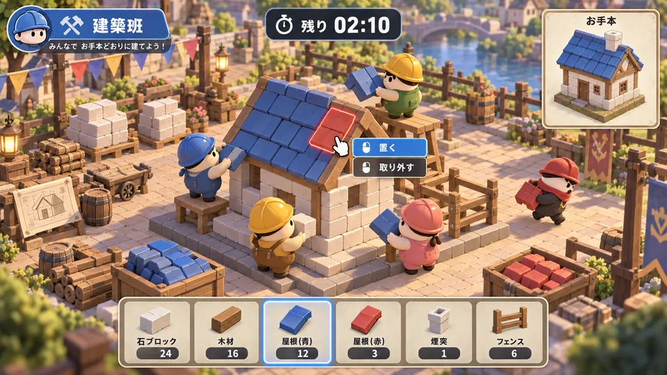

人狼×建築
その置き間違いは、勘違いか、わざとか。
お手本をまねて建築する仲間の中に、わざと間違えて完成を邪魔する人狼がいるゲームです。誰がどんな作業をしたかも手掛かりになります。
企画の中身を見る：人狼×建築
- 面白さの狙い
- 普通のミスと妨害が紛れることで、作業中の行動から推理や会話が生まれる形にしたいです。建築を進めるか、怪しい動きを確かめるかで迷う時間を作ります。
- 考えている一場面
- 屋根の青いブロックが一つだけ赤い。置いた人は「そう見えた」と言う。直している間に、反対側の窓の位置も変わっている。
- 検討中の点
- 共同で一つの建物を作るか、別々に作るかは未定です。人数や投票、勝敗の基準も検討しています。最後に大量に壊すだけで勝てない形にしたいです。
- 確かめたいこと
- 実物のブロックと役職カードで、建築中の行動から疑い合う会話が生まれるか確かめたいです。まだ実施していません。
ゲーム本体は未制作です。
この企画へのリンク